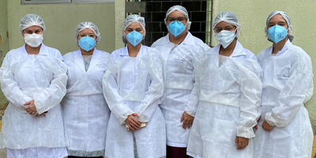

Notícias - Blog
Rematricula
A UNITABA - Faculdade de Tabatinga adiou a rematricula que era até o dia 10/11/2020, para a nova data 30/11/2020, e será feito de maneira online para comodidade e segurança de nossos alunos. Todos os alunos precisam preencher o formulario e reenviar os documentos atualizados até a data limite.
Postado em: 08/11/2020

Alunos do curso de Enfermagem da UNITABA realizam ação voluntária.
No dia 25 de outubro, no bairro Jardim Alvorada, em Tabatinga, os alunos do Curso de Graduação em Enfermagem da UNITABA - Faculdade de Tabatinga, estiveram no praça, realizando ações educativas como verificação de temperatura, verificação de pressão arterial e glicemia.
A ação foi coordenada pela Professora e Coordenadora do curso, Doutora Alessandra G. M. Moreira.
Postado em: 21/10/2020
Pedagogia da UNITABA comemora o Dia do Professor com palestra.
Em comemoração ao Dia do Professor, no dia 14 de outubro, o curso de Pedagogia da UNITABA - Faculdade de Tabatinga, recebeu a professora especialista Bruna Fernandes Reis, que ministrou uma palestra sobre o "Professor de AEE: desafios e possibilidades", com o intuito de compartilhar com os alunos os conhecimentos sobre a área de inclusão, assunto de relevante debate acadêmico.
Postado em: 10/10/2020
Curso de Extensão da UNITABA Semana de 21/19/2020 à 25/09/2020
Entre a semana dos dias 19/10/2020 à 23/10/2020 a UNIESP fornecerá gratuitamente aos alunos os seguintes curso de extensão:
Prescrição de Exercícios para Diabéticos e Hipertensos
Postado em: 08/10/2020
Desafio na Educação em Tempo de Pandemia é o tema da próxima live da UNITABA
Na live desta sexta, a UNITABA - Universidade de Tabatinga reúne a Diretora Lucia Silva e a coordenadora do curso de Pedagogia, profª Miriam Oliveira, para tratar o tema: "Avaliação Formativa: Desafio na Educação em Tempo de Pandemia".
Postado em: 28/09/2020